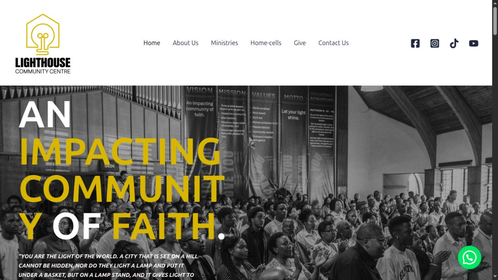
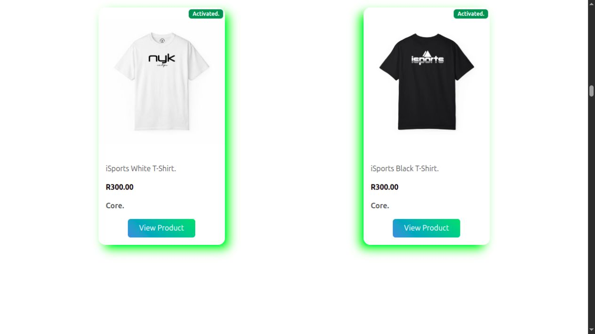

Lighthouse Community Centre
A community website built with WordPress and Elementor, bringing the church’s information and activities together online.
Explore project : Lighthouse Community CentreTHE PORTFOLIO
WordPress, custom front-end development and a WooCommerce project in progress. A closer look at what I’ve been building.

A community website built with WordPress and Elementor, bringing the church’s information and activities together online.
Explore project : Lighthouse Community Centre
A custom-built website for a lifestyle and sportswear brand, developed with HTML, CSS and JavaScript.
Explore project : Interstellar SportsAn online store taking shape in WordPress. The work so far uses a page builder and a plugin.
View progress : WooCommerce storeLET’S BUILD SOMETHING
I’m open to WordPress and front-end opportunities, as well as freelance website projects.
Let’s talk